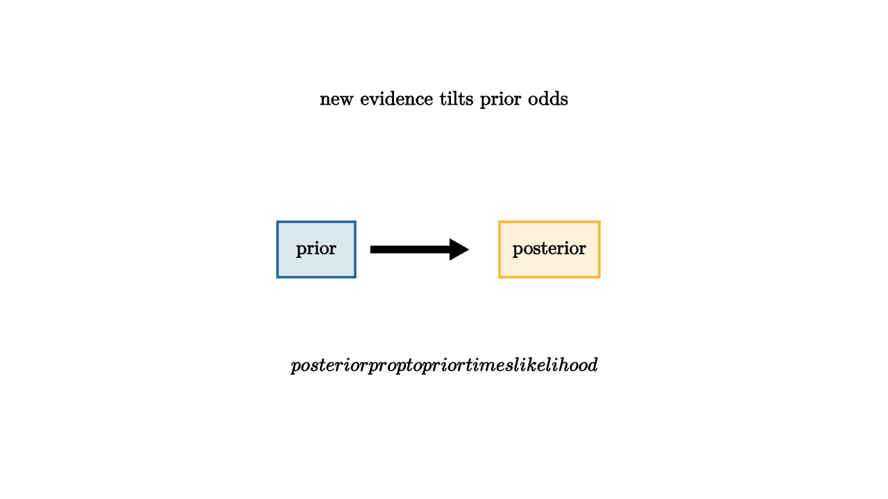

Bayes' rule is the mathematics of changing your mind when evidence arrives. The hardest part is not the formula. The hard part is remembering the base rate. A test that is accurate in isolation can still produce many false alarms when the condition is rare. This is why medical screening, fraud alerts, spam filters, and security alarms need probability, not only intuition.
The formula is short:
Here $H$ is a hypothesis and $E$ is evidence. The numerator says that evidence matters through two factors: how plausible the hypothesis was before seeing the evidence, and how well the hypothesis predicts the evidence.

source
let soft = |col, amount| lerp(WHITE, col, amount)
mesh bayes = [
center{1.35u} Text("new evidence tilts prior odds", 0.64),
center{1.15l} fill{soft(BLUE, 0.16)} stroke{BLUE, 2} Rect([0.7, 0.5]),
center{1.15l} Text("prior", 0.62),
stroke{BLACK, 2.5} Arrow(0.65l, 0.2r),
center{0.95r} fill{soft(ORANGE, 0.18)} stroke{ORANGE, 2} Rect([0.9, 0.5]),
center{0.95r} Text("posterior", 0.62),
center{1.05d} Tex("posterior \\propto prior \\times likelihood", 0.62)
]Consider a rare condition present in 1 percent of people. A test catches 90 percent of true cases and falsely alarms on 5 percent of healthy cases. A positive test sounds decisive, but among 10,000 people there are about 100 true cases and 9,900 healthy people. The test catches about 90 true cases and falsely alarms on about 495 healthy people. Most positive results are false positives, even though the test is useful.
This does not mean tests are bad. It means evidence should be interpreted in context. A second independent test can change the odds dramatically. A test given after symptoms or exposure can be more informative because the prior probability is higher. Bayesian thinking connects the evidence to the population it was drawn from.
A fraud alert gives the same lesson in a less medical setting. If a bank sees millions of ordinary purchases and a tiny fraction of fraud, a suspicious pattern still has to compete against the huge base of legitimate activity. A purchase in a new city at midnight is evidence. A travel notice, the merchant type, the device used, and the customer's past behavior all update the prior. Good filters combine weak clues rather than treating one clue as final.
Bayesian reasoning is especially helpful when evidence arrives in stages. After the first clue, the posterior belief becomes the prior for the next clue. This is how a mechanic diagnoses a car, how a teacher figures out which misconception a student has, and how a doctor moves from symptoms to tests to treatment. Each step should change belief by an amount that matches the strength of the evidence.
source
let soft = |col, amount| lerp(WHITE, col, amount)
"Base Rate"
mesh group = [
center{1.25u} Text("rare condition: few true cases", 0.62),
center{1.2l} fill{soft(BLUE, 0.2)} stroke{BLUE, 2} Rect([0.5, 0.4]),
center{0.55l} fill{soft(BLUE, 0.2)} stroke{BLUE, 2} Rect([0.5, 0.4]),
center{0.1r} fill{soft(BLUE, 0.2)} stroke{BLUE, 2} Rect([0.5, 0.4]),
center{0.85r} fill{soft(RED, 0.2)} stroke{RED, 2} Rect([0.5, 0.4])
]
play Grow(0.7)
"Positive Test"
group = [
center{1.25u} Text("positives mix true and false alarms", 0.62),
center{0.6l} fill{soft(RED, 0.2)} stroke{RED, 2} Rect([0.55, 0.45]),
center{0.1r} fill{soft(ORANGE, 0.22)} stroke{ORANGE, 2} Rect([0.55, 0.45]),
center{0.85r} fill{soft(ORANGE, 0.22)} stroke{ORANGE, 2} Rect([0.55, 0.45]),
center{1.0d} Text("base rate explains the surprise", 0.62)
]
play Trans(1.0)
"Update"
group = [
center{1.25u} Text("more evidence can sharpen the odds", 0.62),
stroke{GREEN, 3} Arrow(1.2l, 1.2r),
center{0.2d} Text("posterior becomes next prior", 0.62)
]
play Trans(0.9)Bayes is useful because daily evidence is rarely final. A late bus, a suspicious bank charge, a weather alert, and a diagnostic result all move belief by degrees. The disciplined habit is to ask what was likely before the evidence, how likely the evidence would be under each explanation, and what decision threshold matters now.
The decision threshold is part of the story. You might investigate a bank alert at a low probability of fraud because the cost of checking is small. You would require stronger evidence before making an expensive or harmful choice. Bayes gives the updated odds; good judgment connects those odds to action.